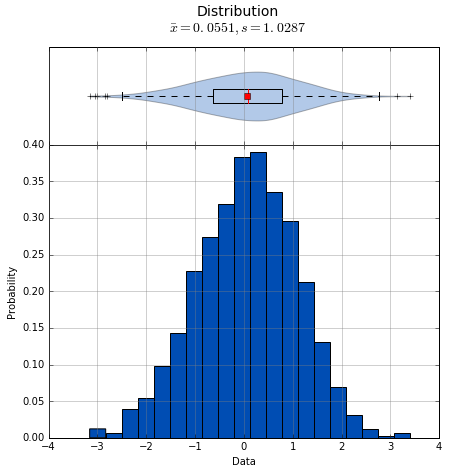

What is sci_analysis?¶
sci_analysis is a python package for quickly performing statistical data analysis. It provides a graphical representation of the supplied data and also performs the statistical analysis. sci_analysis is smart enough to determine the correct analysis and tests to perform based on the shape of the data or number of arguments you provide, as well as how the data is distributed.
Currently, sci_analysis can only be used for analyzing numeric data. Categorical data analysis is planned for a future version. The three types of analysis that can be performed are histograms of single vectors, correlation between two vectors and a comparison of means between multiple vectors.
What’s new in sci_analysis version 1.4?¶
In version 1.4, sci_analysis was re-written to be more pythonic and to support python 3. A ton of new graphing options have been added to histograms, scatter plots and oneway plots. Histograms can now display an accompanying cumulative distribution plot and fit lines to a specified distribution which are displayed on both the histogram and cumulative distribution plot. Scatter plots can now overlay density contour lines and display boxplot borders. Boxplots have been revamped and are now overlayed on top of a kernel density estimation, which provides a much better representation of distribution density. New tests have been added for comparing two distributions – Student’s T Test for normally distributed data, the Mann Whitney U Test for non-parametric data and the two-sample Kolmogorov-Smirnov Test for small non-parametric samples. The Kolmogorov-Smirnov Test has been added for determining goodness-of-fit to a specified distribution as well.
Getting started with sci_analysis¶
sci_analysis requires python 2.7 or 3.5.
If you use OS X or Linux, python should already be installed. You can check by opening a terminal window and typing which python on the command line. To verify what version of python you have installed, type python --version at the command line. If the version is 2.7.x or 3.5.x, where x is any number, sci_analysis should work properly.
If you are on Windows, you might need to install python. You can check to see if python is installed by clicking the Start button, typing cmd in the run text box, then type python.exe on the command line. If you receive an error message, you need to install python. The easiest way to install python is by installing Anaconda or Mini-conda from this page:
https://www.continuum.io/downloads
Alternatively, you can download the python binary from the following page, but be warned that installing the required packages can be difficult using this method:
Installing sci_analysis¶
sci_analysis can be installed with pip by typing the following:
pip install sci_analysis
On Linux, you can install pip from your OS package manager. If you have Anaconda or Mini-conda, pip should already be installed. Otherwise, you can download pip from the following page:
https://pypi.python.org/pypi/pip
sci_analysis works best in conjunction with the excellent pandas and jupyter notebook python packages. If you don’t have either of these packages installed, you can install them by typing the following:
pip install pandas
pip install jupyter
Using sci_analysis¶
From the python interpreter or in the first cell of a Jupyter notebook, type:
import sci_analysis as a
import numpy as np
import scipy.stats as st
Note
The package name is sci_analysis with an underscore.
This will tell python to import sci_analysis to your project as the object a.
If you are using the Jupyter notebook, you may also need to use the following code instead to enable inline plots:
%matplotlib inline
import sci_analysis as a
import numpy as np
import scipy.stats as st
Now, sci_analysis should be ready to use. Try the following code:
np.random.seed(987654321)
data = st.norm.rvs(size=1000)
analyze(data)
A histogram and box plot of the data should appear, as well as printed output similar to that below:
Statistics
----------
Count = 1000
Mean = 0.0551
Std Dev = 1.0287
Std Error = 0.0325
Skewness = -0.1439
Kurtosis = -0.0931
Maximum = 3.4087
75% = 0.7763
50% = 0.0897
25% = -0.6324
Minimum = -3.1586
IQR = 1.4087
Range = 6.5673
Shapiro-Wilk test for normality
-------------------------------
W value = 0.9979
p value = 0.2591
H0: Data is normally distributed
If data contains missing values or strings, they will be ignored when generating the statistics and graphing the histogram.
Note
numpy and scipy.stats were only imported for the purpose of the above example. sci_analysis uses numpy and scipy internally, so it isn’t necessary to import them unless you want to explicitly use them.
Let’s examine the analyze function in more detail. Here’s the signature for the analyze function:
-
analyze(*data, **kwargs)¶ Automatically performs a statistical analysis based on the input arguments.
- xdata : array-like or list(array-like) or dict(array-like)
- The primary set of data.
- ydata : array-like
- The response data set.
- groups : array-like
- The group names used for a oneway analysis.
xdata : array-like, ydata : None - Distribution xdata : array-like, ydata : array-like – Bivariate xdata : list(array-like) or dict(array-like), ydata : None – Oneway
analyze will detect the desired type of data analysis to perform based on whether the ydata argument is supplied, and whether the xdata argument is a two-dimensional array-like object.
The xdata and ydata arguments can accept most python array-like objects, with the exception of strings. For example, xdata will accept a python list, tuple, numpy array, or a pandas Series object. Internally, iterable objects are converted to a Vector object, which is a numpy array of type float64.
If only the xdata argument is passed and it is a one-dimensional vector, the analysis performed will be a histogram of the vector with basic statistics and Shapiro-Wilk normality test. This is useful for visualizing the distribution of the vector.
If xdata and ydata are supplied and are both one-dimensional vectors, an x, y scatter plot with line fit will be graphed and the correlation between the two vectors will be calculated. If there are non-numeric or missing values in either vector, they will be ignored. Only values that are numeric in each vector, at the same index will be included in the correlation. For example, the two following vectors will yield:
example1 = [0.2, 0.25, 0.27, "nan", 0.32, 0.38, 0.39, "nan", 0.42, 0.43, 0.47, 0.51, 0.52, 0.56, 0.6]
example2 = [0.23, 0.27, 0.29, "nan", 0.33, 0.35, 0.39, 0.42, "nan", 0.46, 0.48, 0.49, "nan", 0.5, 0.58]
analyze(example1, example2)
Linear Regression
-----------------
count = 11
slope = 0.8467
intercept = 0.0601
R^2 = 0.9836
std err = 0.0518
p value = 0.0000
HA: There is a significant relationship between predictor and response
Correlation
-----------
Pearson Coeff:
r = 0.9836
p = 0.0000
HA: There is a significant relationship between predictor and response
If xdata is a sequence or dictionary of vectors, summary statistics will be reported for each vector. If each vector is normally distributed and they all have equal variance, a one-way ANOVA is performed. If the data is not normally distributed or the vectors do not have equal variance, a non-parametric Kruskal-Wallis test will be performed instead of a one-way ANOVA.
Note
Vectors should be independent from one another — that is to say, there should not be values in one vector that are derived from or some how related to a value in another vector. These dependencies can lead to weird and often unpredictable results.
For example, a proper use case would be if you had a table with measurement data for multiple groups, such as test scores per class, average height per country or measurements per trial run, where the classes, countries and trials are the groups. In this case, each group should be represented by it’s own vector, which are then all wrapped in a dictionary or sequence.
If xdata is supplied as a dictionary, the keys are the names of the groups and the values are the array-like objects that represent the vectors. Alternatively, xdata can be a python sequence of the vectors and the groups argument a list of strings of the group names. The order of the group names should match the order of the vectors passed to xdata. For example:
np.random.seed(987654321)
group_a = st.norm.rvs(size=50)
group_b = st.norm.rvs(size=25)
group_c = st.norm.rvs(size=30)
group_d = st.norm.rvs(size=40)
analyze({"Group A": group_a, "Group B": group_b, "Group C": group_c, "Group D": group_d})
Group Statistics
Count Mean Std Dev Min Median Max Group
--------------------------------------------------------------------------------------------------
40 0.2159 1.1629 -2.2678 0.1747 3.1400 Group D
25 0.2403 0.9181 -1.8853 0.3791 1.6715 Group B
30 -0.1282 1.0652 -2.4718 -0.0266 1.7617 Group C
50 -0.0891 1.1473 -2.4036 -0.2490 2.2466 Group A
Bartlett Test
-------------
T value = 1.8588
p value = 0.6022
H0: Variances are equal
Oneway ANOVA
------------
f value = 1.0813
p value = 0.3591
H0: Group means are matched
In the example above, sci_analysis is telling us the four groups are normally distributed (by use of the Bartlett Test, Oneway ANOVA and the near straight line fit on the quantile plot), the groups have equal variance and the groups have matching means. The only significant difference between the four groups is the sample size we specified. Let’s try another example, but this time change the variance of group B:
np.random.seed(987654321)
group_a = st.norm.rvs(0.0, 1, size=50)
group_b = st.norm.rvs(0.0, 3, size=25)
group_c = st.norm.rvs(0.1, 1, size=30)
group_d = st.norm.rvs(0.0, 1, size=40)
analyze({"Group A": group_a, "Group B": group_b, "Group C": group_c, "Group D": group_d})
Group Statistics
Count Mean Std Dev Min Median Max Group
--------------------------------------------------------------------------------------------------
40 0.2159 1.1629 -2.2678 0.1747 3.1400 Group D
25 0.7209 2.7543 -5.6558 1.1374 5.0146 Group B
30 -0.0282 1.0652 -2.3718 0.0734 1.8617 Group C
50 -0.0891 1.1473 -2.4036 -0.2490 2.2466 Group A
Bartlett Test
-------------
T value = 42.7597
p value = 0.0000
HA: Variances are not equal
Kruskal-Wallis
--------------
p value = 0.0660
h value = 7.1942
H0: Group means are matched
In the example above, group B has a standard deviation of 2.75 compared to the other groups that are approximately 1. The quantile plot on the right also shows group B has a much steeper slope compared to the other groups, implying a larger variance. Also, the Kruskal-Wallis test was used instead of the Oneway ANOVA because the pre-requisite of equal variance was not met.
In another example, let’s compare groups that have different distibutions and different means:
np.random.seed(987654321)
group_a = st.norm.rvs(0.0, 1, size=50)
group_b = st.norm.rvs(0.0, 3, size=25)
group_c = st.weibull_max.rvs(1.2, size=30)
group_d = st.norm.rvs(0.0, 1, size=40)
analyze({"Group A": group_a, "Group B": group_b, "Group C": group_c, "Group D": group_d})
Group Statistics
Count Mean Std Dev Min Median Max Group
--------------------------------------------------------------------------------------------------
40 0.1246 1.1081 -1.9334 0.0193 3.1400 Group D
25 0.7209 2.7543 -5.6558 1.1374 5.0146 Group B
30 -1.0340 0.8029 -2.7632 -0.7856 -0.0606 Group C
50 -0.0891 1.1473 -2.4036 -0.2490 2.2466 Group A
Levene Test
-----------
W value = 10.1675
p value = 0.0000
HA: Variances are not equal
Kruskal-Wallis
--------------
p value = 0.0000
h value = 23.8694
HA: Group means are not matched
Note
If a dict is passed to the analyze function, the groups are reported in arbitrary order. This will be fixed in a future release.
The above example models group C as a Weibull distribution, while the other groups are normally distributed. You can see the difference in the distributions by the one-sided tail on the group C boxplot, and the curved shape of group C on the quantile plot. Group B has the highest mean at 0.72, which can be seen in the quantile plot and indicated by the Kruskal-Wallis test.
Alternatively, the above example can be repeated where the groups are in the specified order by setting xdata as a list and the groups argument as a list of the group names.
np.random.seed(987654321)
group_a = st.norm.rvs(0.0, 1, size=50)
group_b = st.norm.rvs(0.0, 3, size=25)
group_c = st.weibull_max.rvs(1.2, size=30)
group_d = st.norm.rvs(0.0, 1, size=40)
analyze([group_a, group_b, group_c, group_d], groups=['Group A', 'Group B', 'Group C', 'Group D'])
Group Statistics
Count Mean Std Dev Min Median Max Group
--------------------------------------------------------------------------------------------------
40 0.1246 1.1081 -1.9334 0.0193 3.1400 Group D
25 0.7209 2.7543 -5.6558 1.1374 5.0146 Group B
30 -1.0340 0.8029 -2.7632 -0.7856 -0.0606 Group C
50 -0.0891 1.1473 -2.4036 -0.2490 2.2466 Group A
Levene Test
-----------
W value = 10.1675
p value = 0.0000
HA: Variances are not equal
Kruskal-Wallis
--------------
p value = 0.0000
h value = 23.8694
HA: Group means are not matched
Using sci_analysis with pandas¶
Pandas is a python package that simplifies working with tabular or relational data. Sci_analysis does not depend on or installs pandas, but the two packages work well together. Because columns and rows of data in a pandas DataFrame are naturally array-like, using pandas with sci_analysis is the prefered way to use sci_analysis.
Let’s create a pandas DataFrame to use for analysis:
import pandas as pd
np.random.seed(987654321)
df = pd.DataFrame({'One' : st.norm.rvs(0.0, 1, size=60),
'Two' : st.norm.rvs(0.0, 3, size=60),
'Three' : st.weibull_max.rvs(1.2, size=60),
'Four' : st.norm.rvs(0.0, 1, size=60),
'Month' : ['Jan', 'Feb', 'Mar', 'Apr', 'May', 'Jun', 'Jul', 'Aug', 'Sep', 'Oct', 'Nov', 'Dec'] * 5,
'Condition' : ['Group A', 'Group B', 'Group C', 'Group D'] * 15})
df
This will create a table (pandas DataFrame object) with 6 columns and an index which is the row id. The following command can be used to analyze the distribution of the column titled ‘One’:
analyze(df['One'],
name='Column One',
title='Distribution from pandas')
Statistics
----------
Count = 60
Mean = -0.0562
Std Dev = 1.0779
Std Error = 0.1392
Skewness = 0.1879
Kurtosis = -0.5109
Maximum = 2.2466
75% = 0.5793
50% = -0.0228
25% = -0.9999
Minimum = -2.4036
IQR = 1.5792
Range = 4.6501
Shapiro-Wilk test for normality
-------------------------------
W value = 0.9796
p value = 0.4131
H0: Data is normally distributed
The following command can be used to analyze the correlation between columns ‘One’ and ‘Three’:
analyze(df['One'], df['Three'],
xname='Column One',
yname='Column Three',
title='Bivariate from pandas')
Linear Regression
-----------------
Count = 60
Slope = -0.1807
Intercept = -0.9249
R^2 = -0.2742
Std Err = 0.0832
p value = 0.0340
HA: There is a significant relationship between predictor and response
Spearman Correlation Coefficient
--------------------------------
p value = 0.0785
r value = -0.2289
H0: There is no significant relationship between predictor and response
Anywhere you use a python list or numpy Array in sci_analysis, you can use a column or row of a pandas DataFrame (known in pandas terms as a Series). This is because a pandas Series has much of the same behavior as a numpy Array, causing sci_analysis to handle a pandas Series as if it were a numpy Array.
Performing a Oneway analysis on data in a pandas DataFrame requires some explanation. The simplist way to perform a Oneway analysis is to iterate over a pandas groupby object in a list comprehension. You can find a great explanation of what list comprehensions are and how to use them here:
http://treyhunner.com/2015/12/python-list-comprehensions-now-in-color/
Let’s start with an example. The following code will perform a Oneway analysis using each of the four values in the ‘Conditions’ column:
analyze([group['Two'] for name, group in df.groupby(df['Condition'])],
groups=['Group A', 'Group B', 'Group C', 'Group D'],
categories='Groups',
name='Column Two',
title='Oneway from pandas')
Group Statistics
Count Mean Std Dev Min Median Max Group
--------------------------------------------------------------------------------------------------
15 -0.1906 2.6335 -5.6558 0.2217 3.5229 Group D
15 0.7406 2.4806 -3.0538 0.9879 5.6546 Group B
15 0.9334 3.9554 -5.9492 -0.0510 5.2850 Group C
15 -0.3873 3.2660 -7.4153 -0.1489 4.0653 Group A
Bartlett Test
-------------
T value = 3.7931
p value = 0.2847
H0: Variances are equal
Oneway ANOVA
------------
f value = 0.6628
p value = 0.5784
H0: Group means are matched
From the graph, there are four groups: Group A, Group B, Group C and Group D. The data being analyzed is from column ‘Two’, the variances are equal and there is no significant difference in the means. So how does this work? The argument is a single list comprehension with group names passed to the groups argument. The list comprehension can be thought of this way:
“For each unique value in the DataFrame’s ‘Condition’ column, make a new list containing the values in column ‘Two’ where all the values in the ‘Condition’ column are the same”.
Let’s start by working from right to left. df.groupby(df['Condition']) splits the DataFrame df into four parts, where each part has all the rows where the ‘Condition’ column is ‘Group A’, ‘Group B’, ‘Group C’ and ‘Group D’. for name, group in loops over each part where ‘name’ is ‘Group A’, ‘Group B’, ‘Group C’ and ‘Group D’ and ‘group’ is the part of df that corresponds to ‘name’. Note that ‘name’ is not used in this example. A little more on this later. Last, group['Two'] returns just column ‘Two’ for each part. Running the list comprehension by itself shows that it’s a list with four lists, where each inner list is the column ‘Two’ for each group.
[group['Two'] for name, group in df.groupby(df['Condition'])]
One thing to note is that the groups argument was used to explicitly define the group names. This will only work if the group names and order are known in advance. If they are unknown, a dictionary comprehension can be used instead of a list comprehension to to get the group names along with the data:
analyze({name: group['Two'] for name, group in df.groupby(df['Condition'])},
categories='Groups from Dictionary',
name='Column Two',
title='Oneway from pandas')
Group Statistics
Count Mean Std Dev Min Median Max Group
--------------------------------------------------------------------------------------------------
15 -0.1906 2.6335 -5.6558 0.2217 3.5229 Group D
15 0.7406 2.4806 -3.0538 0.9879 5.6546 Group B
15 0.9334 3.9554 -5.9492 -0.0510 5.2850 Group C
15 -0.3873 3.2660 -7.4153 -0.1489 4.0653 Group A
Bartlett Test
-------------
T value = 3.7931
p value = 0.2847
H0: Variances are equal
Oneway ANOVA
------------
f value = 0.6628
p value = 0.5784
H0: Group means are matched
Notice that the dictionary comprehension produces the same results but in a different order, and did not require the ‘groups’ argument to be set. In this situation, ‘name’ in the dictionary comprehension represents the group names to be used, making the ‘groups’ argument unnecessary to set. Using a dictionary comprehension is fine when the groups are unknown, but not ideal if the boxplots should be shown in a particular order.
Let’s consider an example where the data is grouped by the ‘Month’ column instead of ‘Condition’:
data = list()
months = list()
for name, group in df.groupby(df['Month']):
data.append(group['Two'])
months.append(name)
analyze(data,
groups=months,
categories='Months from List',
name='Column Two',
title='Oneway from pandas')
Group Statistics
Count Mean Std Dev Min Median Max Group
--------------------------------------------------------------------------------------------------
5 2.2163 3.4431 -2.6899 4.1257 5.1658 Mar
5 1.7872 3.4116 -3.0538 1.1383 5.6546 Feb
5 0.9972 1.5334 -1.1743 1.2664 2.8004 Aug
5 -1.3628 3.3515 -5.7216 -1.0495 3.3774 Sep
5 1.4629 2.0392 -1.5363 1.3246 4.0653 May
5 -0.0327 1.9319 -2.1934 0.9879 1.8137 Jun
5 1.8617 4.6673 -5.1767 4.9062 5.2850 Jul
5 -1.2622 3.9392 -7.4153 -0.1489 3.0673 Jan
5 -1.3938 3.0508 -5.6558 -1.8426 1.7373 Apr
5 -1.2777 3.4456 -5.9492 -0.3654 3.1604 Nov
5 -0.1753 3.0070 -3.9105 -0.0537 3.5229 Dec
5 0.4673 1.9890 -2.2962 0.2914 2.7754 Oct
Bartlett Test
-------------
T value = 8.1523
p value = 0.6996
H0: Variances are equal
Oneway ANOVA
------------
f value = 0.9875
p value = 0.4709
H0: Group means are matched
In this example, a for loop is used to build the data and month lists. This method works well, but the months are graphed out of order. Since the possible months are known in advance, it’s possible to set the months in the order they should appear in. This is done by creating a list called months with the ordered months, a dictionary comprehension called data and list comprehension that puts the values in data in the order of the months list:
months = ['Jan', 'Feb', 'Mar', 'Apr', 'May', 'Jun', 'Jul', 'Aug', 'Sep', 'Oct', 'Nov', 'Dec']
data = {month: data['Two'] for month, data in df.groupby(df['Month'])}
analyze([data[month] for month in months],
groups=months,
categories='Ordered Months from Dictionary',
name='Column Two',
title='Oneway from pandas')
Group Statistics
Count Mean Std Dev Min Median Max Group
--------------------------------------------------------------------------------------------------
5 2.2163 3.4431 -2.6899 4.1257 5.1658 Mar
5 1.7872 3.4116 -3.0538 1.1383 5.6546 Feb
5 0.9972 1.5334 -1.1743 1.2664 2.8004 Aug
5 -1.3628 3.3515 -5.7216 -1.0495 3.3774 Sep
5 1.4629 2.0392 -1.5363 1.3246 4.0653 May
5 -0.0327 1.9319 -2.1934 0.9879 1.8137 Jun
5 1.8617 4.6673 -5.1767 4.9062 5.2850 Jul
5 -1.2622 3.9392 -7.4153 -0.1489 3.0673 Jan
5 -1.3938 3.0508 -5.6558 -1.8426 1.7373 Apr
5 -1.2777 3.4456 -5.9492 -0.3654 3.1604 Nov
5 -0.1753 3.0070 -3.9105 -0.0537 3.5229 Dec
5 0.4673 1.9890 -2.2962 0.2914 2.7754 Oct
Bartlett Test
-------------
T value = 8.1523
p value = 0.6996
H0: Variances are equal
Oneway ANOVA
------------
f value = 0.9875
p value = 0.4709
H0: Group means are matched
In the last example, the months list was used to specify the order the box plots should be graphed in. The same technique can be applied for selecting particular groups, such as only comparing months that have 31 days.
months = ['Jan', 'Mar', 'May', 'Jul', 'Aug', 'Oct', 'Dec']
data = {month: data['Two'] for month, data in df.groupby(df['Month'])}
analyze([data[month] for month in months],
groups=months,
categories='Months with 31 Days',
name='Column Two',
title='Oneway from pandas')
Group Statistics
Count Mean Std Dev Min Median Max Group
--------------------------------------------------------------------------------------------------
5 -1.2622 3.9392 -7.4153 -0.1489 3.0673 Jan
5 2.2163 3.4431 -2.6899 4.1257 5.1658 Mar
5 0.9972 1.5334 -1.1743 1.2664 2.8004 Aug
5 1.4629 2.0392 -1.5363 1.3246 4.0653 May
5 -0.1753 3.0070 -3.9105 -0.0537 3.5229 Dec
5 0.4673 1.9890 -2.2962 0.2914 2.7754 Oct
5 1.8617 4.6673 -5.1767 4.9062 5.2850 Jul
Bartlett Test
-------------
T value = 6.6838
p value = 0.3511
H0: Variances are equal
Oneway ANOVA
------------
f value = 0.7583
p value = 0.6085
H0: Group means are matched
With pandas, it’s possible to perform advanced aggregation and filtering functions using the GroupBy object’s apply method. Since the sample sizes were small for each month in the above examples, it might be helpful to group the data by annual quarters instead. First, let’s create a function that adds a column called ‘Quarter’ to the DataFrame where the value is either Q1, Q2, Q3 or Q4 depending on the month.
def set_quarter(data):
month = data['Month']
if month.all() in ('Jan', 'Feb', 'Mar'):
quarter = 'Q1'
elif month.all() in ('Apr', 'May', 'Jun'):
quarter = 'Q2'
elif month.all() in ('Jul', 'Aug', 'Sep'):
quarter = 'Q3'
elif month.all() in ('Oct', 'Nov', 'Dec'):
quarter = 'Q4'
else:
quarter = 'Unknown'
data.loc[:, 'Quarter'] = quarter
return data
This function will take a GroupBy object called data, where data’s DataFrame object was grouped by month, and set the variable quarter based off the month. Then, a new column called ‘Quarter’ is added to data where the value of each row is equal to quarter. Finally, the resulting DataFrame object is returned.
Using the new function is simple. The same techniques from previous examples are used, but this time, a new DataFrame object called df2 is created by first grouping by the ‘Month’ column then calling the apply method which will run the set_quarter function.
quarters = ['Q1', 'Q2', 'Q3', 'Q4']
df2 = df.groupby(df['Month']).apply(set_quarter)
data = {quarter: data['Two'] for quarter, data in df2.groupby(df2['Quarter'])}
analyze([data[quarter] for quarter in quarters],
groups=quarters,
categories='Quarters',
name='Column Two',
title='Oneway from pandas')
Group Statistics
Count Mean Std Dev Min Median Max Group
--------------------------------------------------------------------------------------------------
15 0.9138 3.7034 -7.4153 0.8059 5.6546 Q1
15 0.4987 3.4778 -5.7216 0.2217 5.2850 Q3
15 0.0122 2.5243 -5.6558 1.1374 4.0653 Q2
15 -0.3286 2.7681 -5.9492 -0.0537 3.5229 Q4
Bartlett Test
-------------
T value = 2.6544
p value = 0.4480
H0: Variances are equal
Oneway ANOVA
------------
f value = 0.4474
p value = 0.7201
H0: Group means are matched